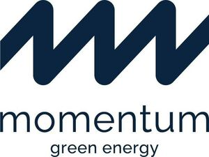

Trade Mark Journal No.2025/051 19 December 2025
WO0000001873825 (4,35,36,37,39,40,42)
Office of origin: European Union Intellectual Property Office (EUIPO)
Date of International Registration:16 May 2025
Date of designation in the UK:
16 May 2025

Dark blue.
International priority date claimed: 19 November 2024
(European Union Intellectual Property Office (EUIPO))
(019107992)
- Class 4
- Electrical energy; electrical energy from wind power; electrical energy from renewable sources; electrical energy from solar power; electrical energy.
- Class 35
- Business assistance, management and administrative services; business administration and management; assistance and consultancy services in the field of business management of companies in the energy sector; analysis of market research data; evaluation of business opportunities; business consultancy and advisory services; business management; business administration; business organisation; economic and operational management of wind turbines and solar-power installations for business purposes; consultancy relating to the commercial operation of solar and wind energy installations.
- Class 36
- Investment trusteeship and advisory services; consultancy concerning financing of energy projects; financial consultancy in the energy sector; investment analysis; investment portfolio management services; investment in and consultancy relating to investment in renewable energy; investment in wind turbines; real estate investment planning, including renewable energy installations.
- Class 37
- Installation of solar panels; installation of non-residential solar panel power systems; installation of wind power systems; repair of energy production plants and machines; repair of energy supply installations; repair services for electric generators and wind turbines; repair or maintenance of power distribution or control machines and apparatus; maintenance and repair of solar power installations; power infrastructure construction; construction of utility solar installations; construction of wind power plants; maintenance and repair of wind power plants; consultancy relating to the repair and maintenance of solar and wind energy installations; repair and maintenance of energy-storage facilities; installation of energy-storage facilities; repowering and lifetime extension of existing wind turbines and solar-power installations; dismantling of wind turbines and solar-power installations.
- Class 39
- Storage of energy and fuels; storage of electricity; storage of electricity from renewable energy sources.
- Class 40
- Production of electrical power from renewable sources; energy production; production of renewable green energy; energy production; generation of power; generation of electricity from wind energy; generation of electricity from solar energy; electricity generating; electricity generating; clean energy production; consultancy services relating to the generation of electrical power; consultancy and information relating to energy production; consultancy relating to the energy production at solar and wind energy installations.
- Class 42
- Technological monitoring and inspection; technical consultancy relating to renewable energy; consultancy relating to the development of solar and wind energy installations; technical advisory services relating to the use of energy in connection with energy-generating installations, including wind-energy installations, energy-storage facilities and solar-power installations; development of wind and solar energy installations.
Momentum Energy Group A/S
Representative: GORRISSEN FEDERSPIEL ADVOKATPARTNERSELSKAB, Silkeborgvej 2, DK-8000 Aarhus C, DENMARK